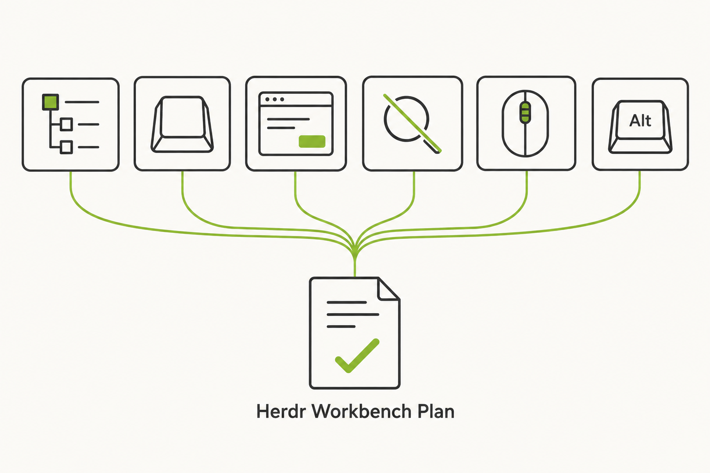
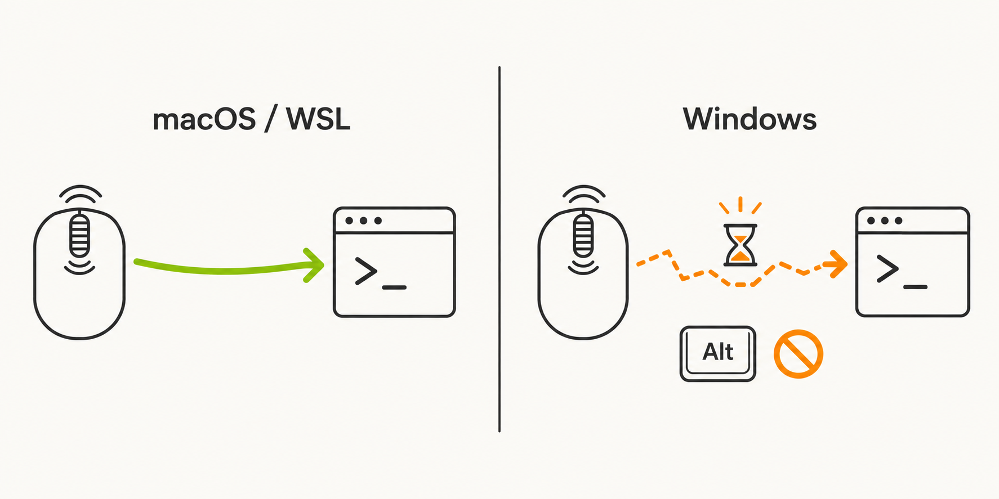
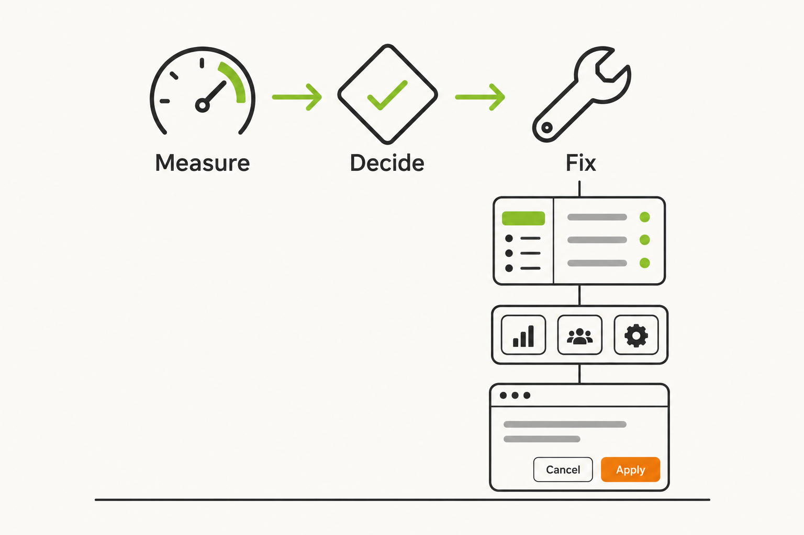
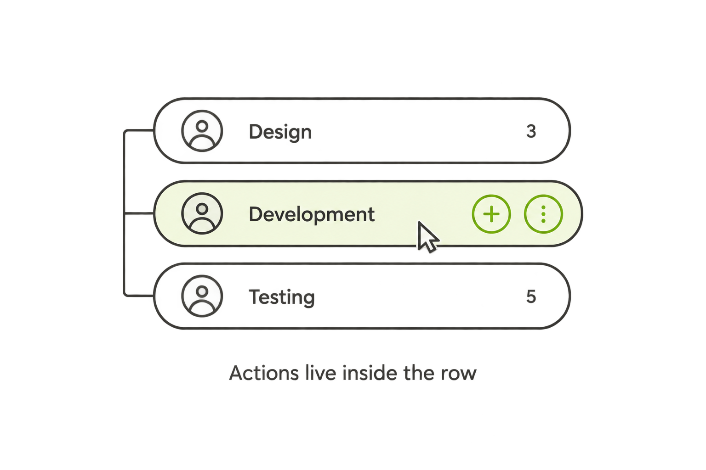
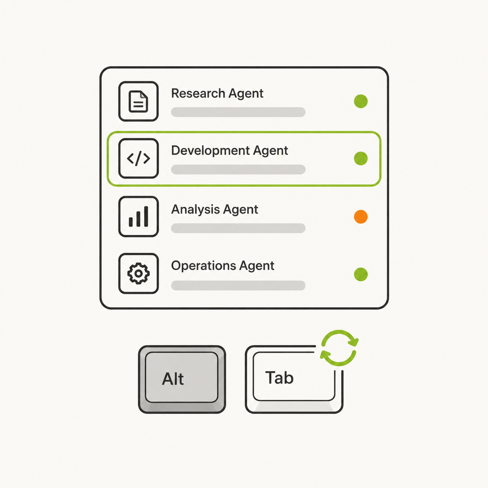
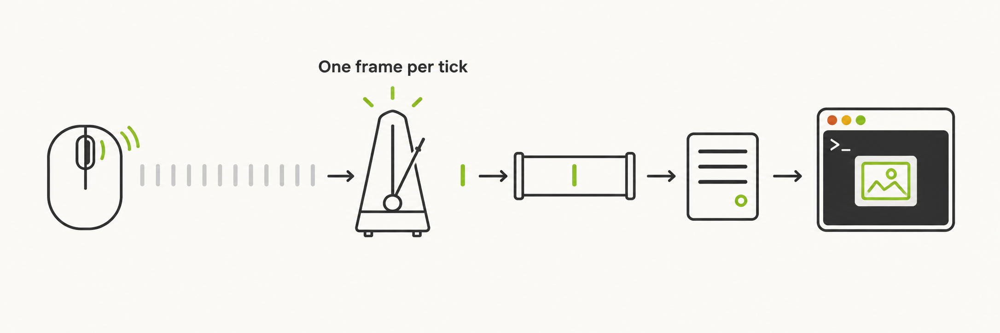
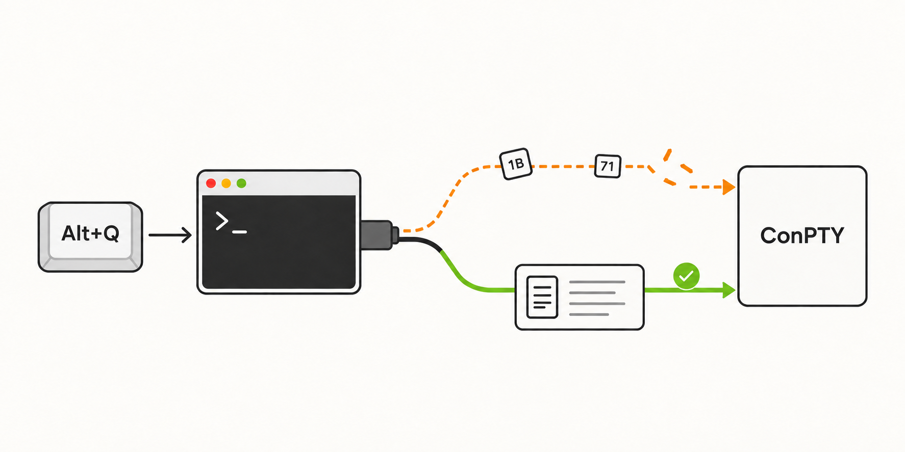

Plan: Herdr Windows 終端修正與側邊欄導覽重整
六項工作：Windows Herdr terminal 的捲動卡頓與 Alt 組合鍵、App 快捷鍵在 Windows/Linux 終端內失效、側邊欄列內動作與 Space 導覽、Spaces／Agents 快捷鍵與 Agent 輪替、移除 Agent 檢查器、重新設計「加入 Herdr Session」對話框。

Purpose
依使用者 2026-09-24 確認的需求，規劃六項 Yuzora ADE 改善，讓另一位開發者或 agent 能照本計畫實作與驗證。兩項 Windows-only 問題（#1 捲動、#6b Alt 組合鍵）先量測、再依證據修，不憑推測改動 Herdr 輸入協定；其餘四項不依賴 Windows 實機，可以先完成。
| # | 需求 | 已確認決策 | Phase |
|---|---|---|---|
| 1 | Windows 上 Herdr terminal 捲動卡頓（macOS、WSL 正常） | Herdr 0.9.1；指 Herdr terminal 分頁，不是完整 Session 畫面；先量測再修；WebGL 暫不做 | 1 → 7 |
| 2 | 側邊欄 icon 收進 row、hover 才顯示；點 Space 開 branch | 點「已包含目前選取 branch」的 Space 時不動作；上次開啟的 branch 跨重啟記住；Session 標題列按鈕不變；Space row 加一個 hover 才出現的收合箭頭（因為點擊不再收合） | 4 |
| 3 | 側邊欄切換 Spaces｜Agents、Agents 快捷鍵 | Mod+Shift+E 切換檢視；Alt+1..9 跳到第 N 個 Agent；輪替：macOS ⌥Tab／⌥⇧Tab，Windows／Linux Alt+`／Alt+Shift+`；按住修飾鍵選、放開切換 | 3 → 5 |
| 4 | 移除 Agent 檢查器 | 全部刪除：UI、前端 IPC、Rust 指令、host helper、capability、測試、i18n、demo | 2 |
| 5 | 重整「加入 Herdr Session」對話框 | 先用 $get-design 找參考、$claude-design 做 2–3 個 HTML 原型；使用者選定後實作 | 6 |
| 6 | Windows 上 Ctrl+K 無效；Alt+Q、Alt+T 等在 Herdr terminal 內無效 | (a) 修 App 快捷鍵分派；(b) Alt+Q／Alt+T 是 pane 內 Agent 的快捷鍵，要讓它們送達 Agent | 3；1 → 8 |
Problem
六項問題可分成三類：Windows-only 的 runtime 行為（#1、#6b）、跨平台的快捷鍵分派缺陷（#6a、#3），以及 UI 結構（#2、#4、#5）。以下證據取自目前程式碼（HEAD bdd036e）與 Herdr 0.9.1 原始碼。Windows 上的實際瓶頸與按鍵流向還沒有量測。
| # | 目前行為與證據 | 影響 |
|---|---|---|
| 1 Windows |
| 在 Windows 上，每張 frame、每次 API 呼叫的固定成本都比較高。未節流的 frame 速率加上背景子程序，可能造成可見的卡頓。需要量測確認。 |
| 6b Windows |
| macOS、WSL 的 pane 是 Unix PTY，直接收到 ESC q，所以正常。Windows ConPTY 可能把它拆成 Esc＋q，或整個忽略。也不能排除 WebView2 在更上游就攔截了按鍵。 |
| 6a | dispatchAppShortcut 在 .xterm 或輸入框內只放行 metaKey（src/state/keyboardSettingsStore.ts:136）。Windows／Linux 的 Mod 是 Ctrl，所以 Ctrl+K、Ctrl+,、Ctrl+Shift+B 等全部被擋。另外，CommandPalette 的監聽器掛在 bubble 階段（src/app/workbench/CommandPalette.tsx:310），而 xterm 處理按鍵時會 stopPropagation，所以就算放寬判斷也收不到事件。 | 焦點在 terminal 或輸入框時，Windows／Linux 的 App 快捷鍵全部失效。 |
| 2 | 動作按鈕（branch 的 +、Space 的 ⋮、Agent 的 ⓘ）是 row 按鈕外面的兄弟元素（src/app/workbench/SpaceAgentTree.tsx:757-960）。點 Space 只會切換收合（:529-533）。 | icon 一直露在 row 外；點 Space 不會開啟任何工作。 |
| 3 | Spaces／Agents 檢視狀態只存在 SpaceAgentTree 的 local state（:73），外部無法切換。沒有 Agent 跳轉或輪替。 | 只能用滑鼠切換檢視與 Agent。 |
| 4 | 檢查器橫跨 UI、IPC、Rust 與 host helper：HerdrAgentInspector.tsx、src/lib/herdrIpc.ts:340-365、src-tauri/src/herdr_service.rs:528-560、src-tauri/host/src/herdr_command.rs:167-172, 419-434、src-tauri/host/src/herdr_service.rs:2110-2180, 3330-3430。Agent 無法聚焦時，後備行為是開啟檢查器（SpaceAgentTree.tsx:553-557）。 | 使用者要求整個移除。 |
| 5 | src/app/workbench/HerdrSessionPicker.tsx：用下拉選單選 Session，看不到每個 Session 的狀態；「已連線」分頁只有一段說明文字；SSH／WSL 的「主機 → runtime → Session」沒有步驟感；主要按鈕停用時不說明原因。 | 不直觀，失敗時不知道下一步。 |

Solution
分三層處理：
- 證據先行（Phase 1）：加入不記錄內容的 terminal 診斷紀錄，以及在暫存 Herdr session 執行的 I/O 探針。Windows 量測與後續 UI 工作平行進行。
- 不需要 Windows 的工作（Phase 2–6）：移除檢查器 → 修 App 快捷鍵分派 → 側邊欄列內動作與 Space 導覽 → 側邊欄快捷鍵與 Agent 輪替 → Session 對話框原型與實作。
- 依證據修 Windows（Phase 7–8）：先做程式碼已證實的低風險修正（session 清單快取、named pipe 等待），其餘修正依量測決定。證據不符合任何預設情境時，停下來問使用者。
| # | 解法摘要 |
|---|---|
| 1 | Rust：session 清單加 1 秒 TTL 快取；每次 API 只解析一次 socket；同一 socket 1 秒內不重複 ping；Windows pipe 改成自適應等待（互動請求上限 8ms，事件通道維持 100ms）。前端（視量測結果）：wheel 依 frame 到達節流、手勢結束後同步 scrollbar、full frame 依繪製合併。 |
| 6b | 依探針的送達矩陣決定。若 ConPTY 誤解析原始 ESC 前綴、而 win32-input-mode 記錄正確，就讓 Windows ConPTY runtime 的修飾鍵改送 win32-input-mode 記錄，沿用同一條有序的 connector 輸入佇列。其他情境停下來提案。 |
| 6a | APP_COMMANDS 增加 terminalSafe 標記與平台預設鍵。terminal-safe 指令在 capture 階段分派，terminal 與輸入框內也生效，並阻止 xterm 送出控制字元。 |
| 2 | row 外框變成可 hover 的列面，動作群組放在列內右側，hover 或鍵盤聚焦時才展開。點 Space 開啟上次的 branch，沒有記憶就開第一個。記憶依 Session 範圍存在 localStorage（LRU 200）。 |
| 3 | 新指令 toggleSidebarView、agent1..9、agentCycleNext／agentCyclePrevious，全部 terminal-safe、可在 Keyboard Settings 改鍵。按住 Alt 時顯示數字標示；輪替浮層依最近使用順序（MRU）排列。 |
| 4 | 刪除 UI、前端 IPC、Rust、host、capability、測試、i18n、demo；ADR-0004 追加補充說明。 |
| 5 | 參考 Linear、Raycast、Vercel 的清單密度與鍵盤優先互動，用 Yuzora 自己的 token 做 3 個原型 → 使用者選定 → 以 shadcn 元件實作，保留所有既有行為契約。 |
原則
- Herdr 是權威：socket 路徑只來自
session list；不偽造 Agent／Session 資料；按鍵編碼只用 ConPTY 官方格式。 - shadcn 優先：自訂 UI（Agent 輪替浮層）要寫明原因。
- 身分依 Session 隔離：host＋session＋workspace／agent id。
- 診斷不記錄內容：不記 terminal 輸出，也不記一般輸入文字。
- Windows 實機驗收由使用者執行，除非建置時另行授權代理透過 SSH
yuzora-windows執行隔離探針；不得操作 RDP 視窗。 - 不執行
git add／commit／push；瀏覽器自動化或截圖驗收要先取得同意。

Relevant Files
Existing Files
- existing
src/app/workbench/SpaceAgentTree.tsx— 側邊欄 tree：row 結構、activate()、檢視切換、檢查器掛載點。 - existing
src/app/workbench/space-agent-sidebar.css— row 樣式（hover／selected／列內動作）。 - existing
src/app/workbench/HerdrLauncher.tsx— 側邊欄標頭，開啟 Session 對話框。 - existing
src/app/workbench/HerdrSessionPicker.tsx、HerdrSessionPicker.test.tsx— 要重整的對話框與其行為契約。 - existing
src/app/workbench/SpaceAgentTree.test.tsx、SpaceAgentTree.create.test.tsx、SpaceAgentTree.status.test.tsx、SpaceAgentSidebar.test.tsx— 側邊欄測試。 - existing
src/app/workbench/HerdrAgentInspector.tsx、HerdrAgentInspector.test.tsx、AnsiText.tsx、ansiSegments.ts（含測試）— 移除；後兩者只有檢查器使用。 - existing
src/lib/herdrIpc.ts、src/lib/herdrTypes.ts、src/state/herdrStore.ts、src/lib/dialogSize.ts、src/demo/runtime.ts— 檢查器的型別、IPC、capability、demo。 - existing
src-tauri/src/herdr_service.rs、src-tauri/src/lib.rs、src-tauri/host/src/herdr_command.rs— Tauri／host 指令註冊與 inventory 測試。 - existing
src-tauri/host/src/herdr_service.rs—agent_get／agent_read、call_checked_api、session 解析、capability 快取。 - existing
src-tauri/host/src/herdr_transport.rs— Windows named pipe 的讀寫等待。 - existing
src-tauri/host/src/herdr_scroll.rs—pane.get／pane.scroll（經call_checked_api）。 - existing
src/state/keyboardSettingsStore.ts、keyboardSettingsStore.test.ts—APP_COMMANDS、dispatchAppShortcut。 - existing
src/app/workbench/CommandPalette.tsx、commandPalette.test.tsx— 全域快捷鍵監聽器（改成 capture）。 - existing
src/workbench/WorkbenchKeyboardBridge.tsx— 已在 capture 階段的全域快捷鍵。 - existing
src/app/workbench/KeyboardSettings.tsx— 顯示與重設平台預設鍵。 - existing
src/state/uiStore.ts、src/app/AppShell.tsx— 檢視切換 nonce；側邊欄收合時展開。 - existing
src/terminal/terminalTransport.ts— terminal 策略的 wheel 分派。 - existing
src/terminal/HerdrScrollbar.tsx、herdrScrollController.ts、herdrScrollTelemetry.ts— scrollbar 輪詢、controller、既有遙測。 - existing
src/terminal/terminalOutputQueue.ts— full frame 的replace／flushNow。 - existing
src/app/panels/HerdrTerminalPage.tsx— wheel handler、frame 處理、pane 聚焦、按鍵攔截的接線點。 - existing
src/terminal/terminalClipboard.ts— 目前唯一使用attachCustomKeyEventHandler的地方（Alt+V、Shift+Enter）。 - existing
src/lib/herdrCapabilities.ts— 捲動策略選擇。 - existing
src/features/logs/logQuery.ts、src/app/workbench/LogsSection.tsx— 除錯紀錄開關與匯出。 - existing
scripts/verify-herdr-runtime.ts、scripts/runtime-fixture-cleanup.ts— 既有的隔離 Herdr runtime 做法，探針沿用。 - existing
.github/clippy-baseline.json— 精確 clippy 基準；目前只含db_profiles、fs_service、ssh_service、askpass，但新增 warning 仍會失敗。host crate 在 CI 是-D warnings。 - existing
.yuuzu/adr/0004-herdr-terminals-browser-only.html— 追加「移除檢查器」補充。 - existing
README.md、README.zh-TW.md、CLAUDE.md— 移除 Agent Inspector 描述。 - existing
src/lib/i18n/locales/{en,zh-TW}/{spaceTree,workbench,editorPreferences}.json— 文案（兩語系都要填）。
New Files
- new
scripts/probe-herdr-terminal-io.ts— 隔離 Herdr I/O 探針：IPC 延遲與按鍵送達矩陣。以 Windows 為主，macOS 用來驗證 harness。 - new
src/terminal/herdrTerminalDiagnostics.ts（＋ test）— 除錯模式下的捲動／frame／按鍵彙總紀錄，不含內容。 - new
docs/testing/windows-herdr-terminal-input-scroll.md— Windows 量測與驗收步驟、要回傳的項目、結果紀錄。 - new
src/lib/spaceBranchMemory.ts（＋ test）— 每個 Space 上次開啟的 branch（localStorage、LRU）。 - new
src/state/agentMruStore.ts（＋ test）— Agent 最近使用順序，只存記憶體。 - new
src/app/workbench/useAgentHotkeys.ts（＋ test）—Alt+1..9、按住 Alt 的數字標示、輪替狀態機。 - new
src/app/workbench/AgentSwitcher.tsx（＋ test）— 輪替浮層；不是 modal，焦點留在原位。 - new
src/lib/herdrRuntimePlatform.ts（＋ test）— 判斷 runtime 是否為 Windows ConPTY：本機 Windows，或hello.os === "windows"的 SSH 主機；WSL 永遠不是。 - new
src/terminal/windowsConptyKeys.ts（＋ test）— win32-input-mode 按鍵編碼；只有 Phase 8 證據支持時才建立。 - new
specs/herdr-windows-terminal-and-sidebar-navigation-plan/design/*.md—$get-design的參考設計系統。 - new
specs/herdr-windows-terminal-and-sidebar-navigation-plan/prototypes/session-picker-{a,b,c}.html— 對話框原型。 - new
docs/html/herdr-windows-terminal-sidebar-<YYYY-MM-DD>.html— 結案報告（依 CLAUDE.md 慣例）。
Implementation Phases
IMPORTANT: Execute every phase and task step by step, in order, top to bottom.
Status markers: [] idle · [wip] in progress · [x] complete · [f] failed. All start as []; the Build Plan workflow updates them as it works.
[x] Phase 0: 基線與護欄
記錄開工前的狀態，讓之後的失敗能分辨是不是本次修改造成的。
0.1 工作樹與領域文件
[x]git status --short只有既有的未追蹤docs/html/*.html；git diff --cached --name-only為空。記下 HEAD。[x]讀.yuuzu/CONTEXT.html、ADR-0004、ADR-0005，確認用語：Terminal Session 不等於 Agent Session；Herdr 是權威。[x]跑一次 0.2 的基線指令。既有失敗記在 Amendments，不修無關問題。
0.2 Testing Strategy
以既有 CI 指令建立基線。
[x]bun run typecheck— 型別基線。[x]bun run test— Vitest 基線。[x]bun run lint— ESLint 基線。[x]cd src-tauri && cargo check --locked --all-targets && cargo test --locked— Rust 基線。[x]cargo clippy --locked --all-targets --manifest-path src-tauri/host/Cargo.toml -- -D warnings— host crate 沒有 warning。[x]cd src-tauri && ruby ../.github/scripts/verify-clippy-baseline.rb ../.github/clippy-baseline.json— 精確基準吻合。
[x] Phase 1: Windows 診斷工具（先量測）
建立兩種證據來源並交給 Windows 端執行。本 Phase 結束後不必等結果，直接進入 Phase 2；Phase 7、8 開始前必須取得結果。
1.1 App 內的診斷紀錄（src/terminal/herdrTerminalDiagnostics.ts）
[x]新增彙總器recordHerdrTerminalMetric(metric)，每 5 秒寫一筆log_event（level:"debug"、kind:"debug"、source:"herdr-terminal"、event:"herdr.terminal.diagnostics"）。未啟用時完全不呼叫 IPC。[x]啟用條件：app 紀錄層級為debug。啟動時用getLogLevel()讀一次；LogsSection切換除錯紀錄成功後同步。既有VITE_YUZORA_SCROLL_DIAGNOSTICS仍可使用。不新增設定 UI。[x]捲動指標：wheel 事件數／秒、每次列數、策略（terminal／pane）；herdrTerminalScroll、herdr_pane_scroll_state、herdr_pane_scroll_to的 invoke 耗時（p50／p95／max，包含 Rust 端子程序與 pipe 等待）。[x]Frame 指標：frames／秒、full 與 delta 數、位元組 p50／p95／max、frame 間隔、term.write回呼耗時 p50／p95。[x]按鍵指標（只記帶 Alt／Ctrl／Meta 或 Escape 的 keydown）：combo（例alt+q）、code、AltGraph、defaultPrevented、xterm 是否送出資料，以及送出內容的描述。只記 ESC／控制字元開頭且 ≤ 8 bytes 的序列（例ESC 71），一般文字一律只記text。[x]在 terminal 容器加 capture keydown 觀察者，不替換 xterm 唯一的attachCustomKeyEventHandler（目前由terminalClipboard.ts持有）。[x]在HerdrTerminalPage.tsx接線：wheel handler（:911-931）、transport 的 frame 事件、output queue 的寫入回呼、IME onData 路徑。接線不改變既有行為。
// 彙總輸出（每 5 秒一筆，只有數字與按鍵名稱）
{ windowMs: 5000, strategy: "terminal",
wheel: { events: 212, rowsP50: 6 },
ipc: { "terminal.scroll": { n: 180, p50: 2.1, p95: 9.8 }, "pane.get": { n: 5, p50: 212, p95: 340 } },
frames: { n: 176, full: 176, bytesP95: 31844, writeMsP95: 6.2, gapMsP50: 7 },
keys: [{ combo: "alt+q", code: "KeyQ", altGraph: false, prevented: false, emitted: "ESC 71" }] }1.2 隔離探針（scripts/probe-herdr-terminal-io.ts）
[x]沿用verify-herdr-runtime.ts的隔離做法：暫存 XDG／APPDATA／LOCALAPPDATA、獨立 session 名稱yz-probe-<timestamp>、清除HERDR_*環境變數、拒絕暫存根目錄以外的 socket。結束時session stop並removeRuntimeFixture。不碰使用者現有的 server。[x]A 部分（延遲）：herdr session list --json子程序 ×20、socketping×50、pane.get×50、pane.scroll×50（交替 offset）、connectorterminal.scroll到下一張 frame ×30（同時記 frame bytes 與 full／delta）。輸出 p50／p95／max。[x]B 部分（按鍵送達矩陣）：程式 P1–P3 × 送出方式 D1–D3 × 按鍵alt+q、alt+t、alt+enter、esc（見下表）。用pane.read（recent，80 行）讀回，每次送出後等 400ms，比較新增的行。每個程式先印READY再開始送鍵，結束時送\x03。[x]判讀：每格標記alt+X（正確）、esc,X（被拆開）、none、other，並附上原始行供人工核對。[x]輸出--out <file>.json與終端摘要表。只有 harness 本身出錯才回傳非 0；矩陣裡的失敗是結果，不是錯誤。[x]可選：bun build --compile --target=bun-windows-x64 scripts/probe-herdr-terminal-io.ts --outfile output/probe-herdr-terminal-io.exe，讓 Windows 不必安裝 bun（output/已在.gitignore）。[x]先在 macOS 用本機herdr0.9.1 跑一次（隔離 session，POSIX 版本只有 P2、P3），確認 harness 正確。
| 代號 | pane 內的程式／送出方式 | 用途 |
|---|---|---|
| P1 | PowerShell [Console]::ReadKey($true) 迴圈，印 KEY vk=… mods=… ch=…（有 pwsh.exe 用它，否則 powershell.exe） | 傳統 console API 看到的按鍵語意 |
| P2 | node（沒有就用 bun）的 raw-mode 讀取器，印 RAW <hex> | 像 pi 這類 Node Agent 實際收到的 VT 位元組 |
| P3 | 同 P2，啟動時先輸出 CSI >1u（Kitty keyboard） | 啟用 Kitty 協定的 Agent |
| D1 | connector terminal.input text "\u001bq" | Yuzora 目前的路徑 |
| D2 | connector terminal.input bytes：win32-input-mode 按下＋放開，例 \x1b[81;16;113;1;2;1_\x1b[81;16;113;0;2;1_ | 候選修法 H-B |
| D3 | API pane.send_keys ["alt+q"] | server 端編碼器（候選 H-C） |
1.3 Windows 驗收文件（docs/testing/windows-herdr-terminal-input-scroll.md）
[x]使用者步驟：(1) 用 Yuzora 內附的resources\herdr\windows-x86_64\herdr.exe或 PATH 上的 0.9.1 執行探針並保存 JSON；(2) 設定 → Logs 開啟除錯紀錄；(3) 在 Herdr terminal 的 pi pane 用滑鼠滾輪、觸控板各捲動 30 秒；(4) 在 pi 中按 Alt+Q、Alt+T、Alt+Enter、Esc；(5) 匯出已清理的紀錄；(6) 回傳 JSON、紀錄檔，以及 Windows 版本、鍵盤配置、輸入法、滑鼠／觸控板種類。[x]列出預期輸出與判讀方式，以及 Phase 7／8 修正後要重跑的同一組步驟。
1.4 Gate G1：Windows 執行方式
yuzora-windows 執行隔離探針（只用暫存 session、不碰既有 Session、不操作 RDP 視窗），還是由使用者依文件自行執行。取得授權前，代理不得連線 Windows。App 內的除錯紀錄一定由使用者在 GUI 操作。結果放在 output/windows-probe/（不入版控）。不必等結果，接著做 Phase 2。1.5 Testing Strategy
彙總器用 Vitest；探針用本機隔離 session 實跑。邊界：未啟用時零 IPC、空視窗不寫紀錄、一般文字不外洩、探針中途失敗仍清理暫存根目錄。
[x]bun run test src/terminal/herdrTerminalDiagnostics.test.ts— 百分位、每 5 秒彙總、未啟用時不呼叫 invoke、按鍵描述不含一般文字。[x]bun run test src/app/panels/HerdrTerminalPage.test.tsx— 接線不改變既有 wheel／frame／輸入行為。[x]bun scripts/probe-herdr-terminal-io.ts "$(command -v herdr)" --out /tmp/yz-probe-macos.json— macOS 隔離執行成功；結束後暫存根目錄已刪除，pgrep -fl yz-probe沒有殘留程序。[x]bun run typecheck與bunx eslint <觸及檔案>— 零錯誤、零警告。
[x] Phase 2: 移除 Agent 檢查器（#4）
完整移除唯讀檢查器與 agent.get／agent.read 讀取路徑。選取 Agent 只會開啟它所屬的 pane，開不了時顯示可修復的錯誤。HERDR 工具裡的 Agent 功能（start／prompt／wait／rename／send-keys／explain，來自 FEATURE_API_METHODS）不受影響。
2.1 前端 UI
[x]刪除HerdrAgentInspector.tsx與其測試。[x]SpaceAgentTree.tsx：移除 import、inspected、inspectorTrigger、Agent row 的ⓘ按鈕（:922-936）與<HerdrAgentInspector>（:994-1001）。[x]activate()的 Agent 分支（:537-558）：前置條件不足時改成setError(sessionNotice(node.sessionName) ?? t("agentUnavailable"))。[x]Agent row 的title／aria-description從inspectHint改為新文案agentHint（「開啟 Agent 所屬的 pane」）。
2.2 前端清理
[x]刪除AnsiText.tsx、ansiSegments.ts與兩者的測試（已確認只有檢查器使用）。[x]herdrIpc.ts：移除herdrAgentGet、herdrAgentRead。herdrTypes.ts：移除HerdrAgentDetails、HerdrAgentReadResult，以及 capability 的agentGet／agentRead。[x]herdrStore.ts：移除canInspectAgent（介面與實作）。[x]dialogSize.ts：移除"herdr-agent-inspector"。舊的偏好值會被isDialogSizeId略過，不需要遷移。[x]src/demo/runtime.ts：移除agentGet／agentReadcapability 名稱。[x]i18n（兩語系）：移除workbench.herdrInspector.*、workbench.ansiText.*、workbench.herdrNav.inspectAgent、spaceTree.inspectAgent、spaceTree.inspectHint；新增spaceTree.agentHint、spaceTree.agentUnavailable。
2.3 Rust／host
[x]src-tauri/src/herdr_service.rs：刪除herdr_agent_get、herdr_agent_read（:528-560）與 inventory 測試項（:648-649）。[x]src-tauri/src/lib.rs：從generate_handler!（:473-474）與 inventory 清單（:654-655）移除。[x]src-tauri/host/src/herdr_command.rs：移除兩個 enum variant（:167-172）與分派（:419-434）。[x]src-tauri/host/src/herdr_service.rs：移除HerdrAgentDetails、HerdrAgentReadResult、agent_get／agent_read方法、parse_agent_get_response／parse_agent_read_response、capability 欄位與旗標設定、IMPLEMENTED_API_METHODS的"agent.get"／"agent.read"，以及相關測試。[x]用rg確認沒有其他地方依賴api.methods內的agent.get／agent.read。
2.4 測試與 fixture
[x]依bun run typecheck修正所有含agentGet／agentRead的 capability fixture（herdrStore*、HerdrBridge*、TabBar、HerdrTerminalPage*、herdrCapabilities、herdrIpc、herdrContextMenu 等）。不放寬型別。[x]SpaceAgentTree.test.tsx：移除 Inspector mock；把「offers ready agents an independent Inspector action…」改寫成兩個測試：Agent row 沒有檢查按鈕；無法聚焦時顯示帶 Session 狀態的 alert。
2.5 文件
[x]README.md／README.zh-TW.md移除「Agent Inspector 維持唯讀」；CLAUDE.md測試慣例移除「Agent Inspector 視覺」。[x]ADR-0004 追加「2026-09-24 補充」：依使用者要求移除 Agent Inspector 與agent.get／agent.read；Agent 選取只開啟所屬 pane。這段取代 2026-09-09 補充裡「既有 Agent 狀態與 Inspector 繼續呈現」的 Inspector 部分。
2.6 Testing Strategy
先用 grep 確認沒有殘留引用，再跑前端相關測試與兩個 Rust crate。
[x]rg -n "HerdrAgentInspector|herdrAgentGet|herdrAgentRead|canInspectAgent|herdr-agent-inspector|herdrInspector|agent_get|agent_read|AnsiText|ansiSegments" src src-tauri/src src-tauri/host/src— 沒有結果。[x]bun run typecheck— fixture 全部更新。[x]bun run test src/app/workbench src/lib src/state src/workbench src/app/panels— 相關測試通過。[x]cd src-tauri && cargo fmt --package yuzora -- --check && cargo check --locked --all-targets && cargo test --locked— inventory 測試通過。[x]cargo fmt --manifest-path src-tauri/host/Cargo.toml -- --check && cargo clippy --locked --all-targets --manifest-path src-tauri/host/Cargo.toml -- -D warnings && cargo test --locked --manifest-path src-tauri/host/Cargo.toml— host crate 沒有未使用程式碼警告。[x]cd src-tauri && ruby ../.github/scripts/verify-clippy-baseline.rb ../.github/clippy-baseline.json— 基準吻合。
[x] Phase 3: App 快捷鍵在 terminal 與輸入框內生效（#6a）
讓 Mod 類的 App 指令（Windows／Linux 的 Mod 是 Ctrl）在 terminal 與一般輸入框內也能觸發，並建立 Phase 5 需要的平台預設鍵。macOS 行為不變。
3.1 指令中繼資料
[x]APP_COMMANDS每筆可設terminalSafe: true與macDefaultBinding?: string。[x]新增defaultBindingFor(command, mac = isMacPlatform())。effectiveBinding、tabShortcutBindings、loadKeyboardOverrides、bindingError的衝突比對、dispatchAppShortcut、KeyboardSettings全部改用平台預設。[x]terminal-safe：commandPalette、settings、toggleSidebar、toggleTools、toggleBrowser、modeAde、modeFiles、modeGit、modeDatabase（Phase 5 再加入新指令）。newTerminal與分頁指令維持現狀。
3.2 分派邏輯
[x]dispatchAppShortcut：terminal-safe 指令略過.xterm與 input／textarea／contenteditable 的阻擋；保留 IME、repeat、AltGraph、dialog／modal 的阻擋。[x]terminal-safe 指令分派成功後preventDefault()並stopPropagation()，避免 xterm 送出\x0b等控制字元。[x]CommandPalette.tsx:310的監聽器改成 capture（addEventListener("keydown", handler, true)，移除時同樣帶true）。
// keyboardSettingsStore.ts（示意）
const command = APP_COMMANDS.find(c => c.id === id)!
const terminalSafe = "terminalSafe" in command && command.terminalSafe
if (!terminalSafe) {
if (target?.closest(".xterm") && !event.metaKey && !tabNavigation) return false
if (target?.closest("input, textarea, [contenteditable=\"true\"]") && !target.closest(".cm-editor")
&& !event.metaKey && !tabNavigation) return false
}
event.preventDefault()
if (tabNavigation || terminalSafe) event.stopPropagation()
run()3.3 按鍵比對與保留鍵
[x]physicalKeyCode補上`→Backquote、,→Comma、.→Period、;→Semicolon、/→Slash、[／]→BracketLeft／BracketRight、\→Backslash、-→Minus、Tab→Tab。只用於含 Alt／Shift 的組合，處理 dead key 與符號字元。[x]bindingValueError：非 macOS 把Alt+Tab、Alt+Shift+Tab視為 reserved（由作業系統持有）。
3.4 文案
[x]editorPreferences.keyboardScope（兩語系）：說明 App 快捷鍵在 terminal 與輸入框內同樣生效；Windows／Linux terminal 內的 Ctrl+K 會開啟命令面板，可在此改鍵把它還給 terminal。
3.5 Testing Strategy
jsdom 單元測試模擬 Windows／macOS UA、事件階段與焦點位置。
[x]keyboardSettingsStore.test.ts：更新「terminal Ctrl input alone」為新語意（Windows UA 下.xterm內 Ctrl+K 會分派；newTerminal仍被阻擋）。新增：textarea 內 Ctrl+K 分派、dialog 內不分派、capture 階段分派後目標監聽器收不到事件、macOS ⌘K 不變、Windows 下Alt+Tab為 reserved、dead key 改用event.code比對。[x]commandPalette.test.tsx：焦點在.xtermtextarea 時 Ctrl+K 開啟命令面板。[x]bun run test src/state/keyboardSettingsStore.test.ts src/app/workbench/commandPalette.test.tsx[x]bun run typecheck與觸及檔案的 ESLint — 零錯誤、零警告。
[x] Phase 4: 側邊欄列內動作與 Space 導覽（#2）
動作按鈕搬進 row 內、只在 hover 或鍵盤聚焦時顯示。點 Space 會開啟上次的 branch，沒有記憶就開排序第一個。

4.1 Row 結構與樣式
[x].tree-row-shell成為列面：hover 與選取底色從.space-tree-row移到外框（.tree-row-shell:hover、.tree-row-shell:has(> .space-tree-row[aria-selected="true"])）。focus ring 留在 treeitem 按鈕上。[x]動作按鈕包進<div className="tree-row-actions">，放在外框內右側。預設width:0; opacity:0; pointer-events:none；.tree-row-shell:is(:hover,:focus-within)時展開。不用display:none／visibility:hidden，按鈕仍可用鍵盤到達。[x]@media (hover: none)時動作永遠顯示；prefers-reduced-motion: reduce時取消過渡動畫。[x]深色主題、拖曳指示線、data-current底色維持原樣。
.tree-row-shell{border-radius:6px}
.tree-row-shell:hover{background:var(--yz-hover)}
.tree-row-shell:has(> .space-tree-row[aria-selected="true"]){background:var(--yz-active)}
.tree-row-actions{display:flex;flex-shrink:0;width:0;overflow:hidden;opacity:0;pointer-events:none}
.tree-row-shell:is(:hover,:focus-within) .tree-row-actions{width:auto;opacity:1;pointer-events:auto}
@media (hover:none){.tree-row-actions{width:auto;opacity:1;pointer-events:auto}}
@media (prefers-reduced-motion:no-preference){.tree-row-actions{transition:opacity 120ms ease-out}}4.2 動作內容
[x]Branch row：既有的+（新增 terminal）搬進動作群組，行為與停用條件不變。[x]Space row：新增收合箭頭（ChevronRight，展開時旋轉；aria-expanded；標籤「展開／收合〈Space 名稱〉」），加上既有的⋮。兩者都沿用suppressClickRef，避免拖曳後誤觸。[x]Session 標題列的按鈕不變。
4.3 點擊 Space
[x]抽出activateBranch(branchNode, { toggleCollapse })。Branch row 點擊維持現有行為（啟用並切換收合）。[x]activate(project)：如果這個 Space 已包含目前選取的 branch（containsSelection），只聚焦該列，不做其他事。否則目標 = 記住的 branch（仍在node.children中），沒有就用node.children[0]。先expand(node.key, true)，再activateBranch(target, { toggleCollapse: false })。[x]錯誤沿用setError；使用者在未存檔確認中取消時不顯示錯誤。
function activateSpace(node: TreeNode) {
focus(node.key)
const current = node.sessionName === session && node.children.some(c => c.space.id === selectedSpace)
if (current) return // 維持不動
const remembered = rememberedSpaceBranch(node.key)
const target = node.children.find(c => c.space.id === remembered) ?? node.children[0]
expand(node.key, true)
if (target) activateBranch(target, { toggleCollapse: false })
}4.4 Branch 記憶（src/lib/spaceBranchMemory.ts）
[x]API：rememberSpaceBranch(projectKey, workspaceId)、rememberedSpaceBranch(projectKey)。localStorage keyyuzora.sidebar.lastBranch.v1；LRU 上限 200；只用getItem／setItem，失敗時保留記憶體內的狀態。[x]projectKey直接用既有的node.key（JSON.stringify([sessionName, "project", group])），所以不同主機、不同 Session 不會互相覆蓋。[x]在既有的[session, selectedSpace]effect（SpaceAgentTree.tsx:486-520）裡記錄；側邊欄、Command Palette、還原等所有啟用來源都會更新。[x]Herdr server 重啟後 workspace id 改變時，找不到就回到第一個 branch。
4.5 文案（兩語系）
[x]folderHint改成新的 Space 行為說明（「點選開啟上次的 branch；方向鍵展開／收合」）；新增收合箭頭的標籤。
4.6 Testing Strategy
行為用 Testing Library 測；視覺要實際看。邊界：記憶的 branch 消失、跨 Session 同名 group、拖曳門檻、storage 例外。
[x]SpaceAgentTree.test.tsx新測試：沒有記憶時開第一個 branch 並展開；選過 branch B 後重新掛載，點 Space 開 B；B 從 snapshot 消失時回到第一個；點已含目前選取的 Space 不呼叫activateSpace、不收合；箭頭只切換收合、不啟用；不同 Session 的同名 group 記憶互不影響；動作按鈕在.tree-row-actions內且 Tab 可到達；拖曳門檻內的點擊仍會啟用（改寫既有測試）。[x]spaceBranchMemory.test.ts：LRU、損壞的 JSON、storage 丟例外。[x]bun run test src/app/workbench/SpaceAgentTree.test.tsx src/app/workbench/SpaceAgentTree.create.test.tsx src/app/workbench/SpaceAgentTree.status.test.tsx src/lib/spaceBranchMemory.test.ts[x]bun run typecheck與觸及檔案的 ESLint。[x]視覺檢查（hover、選取、拖曳、深色主題、窄側邊欄）：使用瀏覽器自動化前要先取得同意；沒有同意就列為待使用者確認。
[x] Phase 5: 側邊欄快捷鍵：切換檢視、Alt+1..9、Agent 輪替（#3）
加入檢視切換、前 9 個 Agent 的直接跳轉，以及類似 Alt+Tab 的輪替。全部使用 Phase 3 的 terminal-safe 與平台預設鍵。

5.1 新指令（全部 terminal-safe、可改鍵）
| id | Windows／Linux 預設 | macOS 預設 | 動作 |
|---|---|---|---|
toggleSidebarView | Ctrl+Shift+E | ⌘⇧E | 切換 Spaces／Agents；側邊欄收合時同時展開 |
agent1…agent9 | Alt+1…Alt+9 | ⌥1…⌥9 | 跳到 Agents 清單第 N 個 |
agentCycleNext | Alt+` | ⌥Tab | 開啟／前進輪替 |
agentCyclePrevious | Alt+Shift+` | ⌥⇧Tab | 反向輪替 |
[x]加入上表指令與editorPreferences.commands.*文案（兩語系）；衝突與 reserved 檢查使用平台預設。
5.2 切換檢視
[x]uiStore：新增sidebarViewToggleRequestnonce 與requestSidebarViewToggle()（沿用既有 nonce 模式）。[x]SpaceAgentTree：effect 收到 nonce 後切換viewMode，寫入原本的yuzora.sidebar.view。[x]AppShell：同一個 nonce 會在側邊欄收合時展開它（已展開就不動）。[x]WorkbenchKeyboardBridge在 capture 階段分派toggleSidebarView。
5.3 Alt+1..9 與數字標示
[x]useAgentHotkeys({ agents, activate })：agents是 Agents 檢視的順序（all.filter(kind === "agent")，受目前 Session 範圍影響）；在 Spaces 檢視也使用同一個順序。[x]快捷鍵啟用 Agent 時不把 DOM 焦點移到側邊欄：activateAgentNode(node, { focusRow: false })；Agent 的 terminal 分頁會自己取得焦點。[x]按住 Alt（macOS ⌥）時，Agents 檢視前 9 列在列內顯示<Kbd>數字；放開、視窗失焦或按下其他鍵時隱藏。前 9 列一律加上aria-keyshortcuts。[x]清單不到 N 個時不做事。
5.4 最近使用順序（src/state/agentMruStore.ts）
[x]只存在記憶體；key =JSON.stringify([sessionName, agentId])；上限 50。[x]更新時機：herdrStore.activateAgent成功後；使用者點擊聚焦 pane 時（HerdrTerminalPage.onActivatePane成功後，用 snapshot 的paneId對應 Agent）。[x]輪替順序：仍存在的 MRU 項目在前，其餘 Agent 依清單順序接在後面。
5.5 輪替浮層（AgentSwitcher.tsx）
[x]狀態機（見下方示意）：第一次按下打開浮層並選取第 2 個（上一個 Agent）；之後每按一次移動一格（反向指令往回，頭尾相接）；指令的非 Shift 修飾鍵全部放開時提交；Esc 或視窗失焦取消；點項目即提交；滑鼠移到項目上會改變選取。[x]0–1 個 Agent 時不開啟。[x]不是 modal：焦點留在原處（通常是 terminal）；浮層用 portal 顯示，aria-live="polite"讀出目前選取。[x]內容：AgentLogo、名稱、狀態、Space／branch；最多顯示 9 列，其餘用 ScrollArea 捲動。[x]用 shadcn 的Card、Item、Kbd、ScrollArea組成。shadcn 沒有 Alt+Tab 式的切換器，所以屬於允許的領域自訂 UI（在變更說明寫明原因）。[x]有 dialog 開啟時不觸發（dispatchAppShortcut既有規則）。
idle --cycle(dir)--> open{ order = mruOrder(agents), index = wrap(dir > 0 ? 1 : -1) }
open --cycle(dir)--> open{ index = wrap(index + dir) }
open --keyup(非 Shift 修飾鍵全部放開)--> commit(order[index]) --> idle
open --Escape | window.blur--> idle // 不啟用
open --click(item)--> commit(item) --> idle5.6 Testing Strategy
jsdom 模擬不同平台的按鍵事件序列（keydown／keyup／blur）。邊界：清單太短、Agent 消失、dialog 開啟、macOS 符號字元。
[x]useAgentHotkeys.test.ts：Windows UA 下焦點在.xterm按 Alt+1 啟用第 1 個 Agent；macOSkey:"¡", code:"Digit1"也能比對；N 超過清單長度不做事；啟用時不聚焦側邊欄列。[x]AgentSwitcher.test.tsx：Alt+` 一次後放開 → 上一個 Agent；兩次 → MRU 第三個；Shift 反向；Esc／blur 取消且不啟用；點項目提交；0–1 個 Agent 不開啟；dialog 開啟時不觸發；macOS 預設 ⌥Tab。[x]agentMruStore.test.ts：去重、上限、已消失的 Agent 被略過。[x]SpaceAgentTree.test.tsx：Mod+Shift+E 切換並持久化；按住 Alt 顯示數字；aria-keyshortcuts。[x]bun run test src/app/workbench/useAgentHotkeys.test.ts src/app/workbench/AgentSwitcher.test.tsx src/state/agentMruStore.test.ts src/app/workbench/SpaceAgentTree.test.tsx src/state/keyboardSettingsStore.test.ts[x]bun run typecheck與觸及檔案的 ESLint。
[x] Phase 6: 「加入 Herdr Session」對話框（#5）
先找參考、做原型，使用者選定後才實作。原型與實作都使用 Yuzora 自己的 token（src/styles.css 的 paper／ink／lime 與 Hanken Grotesk／JetBrains Mono／Newsreader），參考品牌只提供資訊密度與互動模式。
6.1 設計參考（$get-design）
[x]bunx getdesign@latest add linear.app --out specs/herdr-windows-terminal-and-sidebar-navigation-plan/design/linear.md；raycast、vercel同樣輸出到design/。[x]整理要借用的模式：Linear 的精準清單列與狀態標記、Raycast 的鍵盤優先列表與底部操作提示、Vercel 的步驟與空狀態。顏色、字體與元件仍以 Yuzora token 與 shadcnradix-nova為準。
6.2 原型（$claude-design）
[x]3 個獨立 HTML（自帶 CSS／JS、不載入外部資源），放在specs/herdr-windows-terminal-and-sidebar-navigation-plan/prototypes/：- A 來源欄＋Session 清單：左側列出已連線／SSH／WSL 與各自數量，右側是 Session 列（名稱、主機、狀態、是否已載入）。
- B 指令面板式：一個可搜尋清單涵蓋所有來源，依主機分組；主機需要設定時在列內展開。
- C 步驟式：來源 → 主機／runtime → Session，適合第一次設定 SSH／WSL。
[x]每個原型都要涵蓋這些狀態：載入中、沒有執行中的 Session、主機未連線、runtime 設定、相容性錯誤、已停止（停用並說明）、已載入標記、載入進行中、成功關閉；淡色與深色。[x]只做本機靜態檢查（HTML 結構、沒有外部資源）。需要截圖或瀏覽器自動化時要先取得同意。
6.3 Gate G2：選定設計
6.4 實作
[x]依選定的設計重寫HerdrSessionPicker.tsx。元件使用已在src/components/ui/的Dialog、ToggleGroup或Tabs、Item、Badge、Empty、Field、Select、Button、ScrollArea、Kbd、Tooltip。需要的元件若不在清單內，先用bunx --bun shadcn@latest search確認。[x]Session 清單：狀態 Badge（執行中／已停止／已載入）與主機標籤；↑↓ 移動、Enter 載入、雙擊載入；已停止者停用，並說明要到「HERDR 工具 → Sessions」啟動。[x]Footer 顯示主要按鈕停用的原因；保留重新整理。[x]空狀態與錯誤附上可直接操作的按鈕（管理主機、開啟 HERDR 工具的 Sessions 分頁、重新整理）。[x]文案兩語系；對話框尺寸依resizable-modal-window-sizing-plan的慣例決定是否加入dialogSizeid。[x]保留 6.5 列出的所有既有行為契約。
6.5 Testing Strategy
既有契約全部保留，只更新查詢方式；新增鍵盤與停用原因的測試。
[x]HerdrSessionPicker.test.tsx保留：SSH 主機簿與密碼流程；在對話框內新增 SSH 主機；設定主機、重新整理並載入精確的 namespace；已連線的 runtime 不重新部署；不相容錯誤持續顯示，且不載入該主機的快取 Session；不使用前一個 SSH transport 的 runtime；WSL 依既有設定啟用；WSL2 探索、連線並載入；非 Windows 不顯示 WSL；關閉後不套用延遲的選擇。[x]新增：↑↓＋Enter 載入；停用原因文字；已停止的 Session 無法載入；已載入標記。[x]SpaceAgentTree.create.test.tsx裡開啟對話框的流程依新 UI 更新。[x]bun run test src/app/workbench/HerdrSessionPicker.test.tsx src/app/workbench/SpaceAgentTree.create.test.tsx src/app/workbench/SpaceAgentSidebar.test.tsx[x]bun run typecheck與觸及檔案的 ESLint。
[wip] Phase 7: Windows terminal 捲動效能（#1，依證據）
F1、F2 是程式碼已證實的成本，無條件實施。F3–F5 依 Windows 量測決定。

7.1 分析證據
[]在docs/testing/windows-herdr-terminal-input-scroll.md填入前後對照表（欄位見 Notes）。[]依表格決定 F3–F5 是否實施，理由寫進 Amendments。
7.2 F1：Session 清單與 ping 快取（無條件）
[x]HerdrManager新增 session inventory 快取：TTL 1000ms，binary fingerprint 改變就失效。list_sessions()（UI 明確重新整理）一律重新讀取並更新快取；resolve_named_session使用快取。[x]call_checked_api只解析一次(session, socket)，傳進 capability 驗證；移除第二次require_running_session_socket。[x]同一個 socket 與 fingerprint 在 1000ms 內驗證過ping就不重複 ping。[x]任何 API 請求錯誤、身分不符、session start／stop／delete 執行後，清除兩種快取。[x]不變的契約：socket 路徑只來自 session list；已停止的 session 仍會被拒絕（最多延遲一個 TTL，出錯時立刻失效）。remote backend（WSL／SSH）也共用同一套快取，順便減少 helper 來回。[x]Rust 測試（Unix fake binary 加計數檔，搭配 fake socket server）：TTL 內連續 5 次pane_scroll_state最多 1 次session list；socket 錯誤後下一次重新 list；TTL 過後已停止的 session 被拒絕；list_sessions()一律重新讀取。
// host/src/herdr_service.rs（示意）
const SESSION_INVENTORY_TTL: Duration = Duration::from_millis(1000);
pub(crate) fn call_checked_api(&self, session: Option<&str>, is_available: impl Fn(&HerdrApiCapability) -> bool,
method: &str, params: Value, unavailable: &str) -> Result<Value, String> {
let (named, socket) = self.require_running_session_socket(session)?; // 快取的 inventory，只解析一次
let caps = self.cached_capabilities_for_resolved(session, &named, &socket); // ping 1s 有效窗
if !is_available(&caps.api) { return Err(caps.api.reason.unwrap_or_else(|| unavailable.into())); }
self.request_api(&socket, method, params).inspect_err(|_| self.invalidate_runtime_caches(&socket))
}7.3 F2：Windows named pipe 等待（無條件）
[x]wait_local_ready的 Windows 分支改成自適應等待：互動請求 1、1、2、4、8ms…上限 8ms；事件通道（events_subscribe讀取迴圈）維持上限 100ms。用LocalWaitProfile::{Interactive, Idle}參數傳入：read_local_ndjson_line預設 Interactive，事件迴圈指定 Idle。[x]所有 deadline 行為不變；Unix 的poll()路徑不變。[x]單元測試：等待序列（純函式、結果可決定）；既有 Windows CI（cargo test --locked --lib herdr_）的功能測試全部通過。
7.4 F3：wheel 依 frame 節流（條件：frames／秒高於畫面更新率，或 IPC 積壓）
[]terminalTransport.scroll的 terminal 分支：送出一次terminal.scroll後，等下一張 frame 或 50ms 逾時再送下一次；等待期間累積的 delta 合併。第一次捲動不延遲。[]測試：frame 到達前連續 10 次 scroll 最多產生 2 次 IPC，總列數不變；沒有 frame 時 50ms 後釋放；connector 關閉時清空。
7.5 F4：scrollbar 同步（條件：證據或使用者回報 thumb 落後）
[]terminal 策略下，最後一次 wheel 後 150ms（debounce）呼叫HerdrScrollbar的 refresh，不必等 1 秒輪詢。
7.6 F5：full frame 依繪製合併（條件：term.write p95 > 8ms 且 frames／秒 > 60）
[]full frame 改在下一個 animation frame 寫入，期間新的 full frame 取代舊的；delta 仍接在最後接受的 full frame 之後。不在 full frame 前呼叫term.reset()（會造成一幀抖動）。
7.7 不在範圍
@xterm/addon-webgl（新依賴），且要先取得使用者同意。7.8 Windows 重新量測
[]使用者（或已取得 G1 授權的 SSH 隔離探針）用同樣步驟重測。目標：wheel 到下一張 frame p95 ≤ 50ms、pane.getp50 ≤ 20ms、使用者確認不再卡頓；macOS／WSL 沒有退化。
7.9 Testing Strategy
Rust 用 fake binary＋fake socket 驗證快取與失效；前端用 fake transport 驗證節流；實際效果用同一個探針在 macOS 與 Windows 對照。
[x]cd src-tauri && cargo fmt --package yuzora -- --check && cargo check --locked --all-targets && cargo test --locked[x]cargo fmt --manifest-path src-tauri/host/Cargo.toml -- --check && cargo clippy --locked --all-targets --manifest-path src-tauri/host/Cargo.toml -- -D warnings && cargo test --locked --manifest-path src-tauri/host/Cargo.toml[x]cd src-tauri && ruby ../.github/scripts/verify-clippy-baseline.rb ../.github/clippy-baseline.json[x]bun run test src/terminal src/app/panels/HerdrTerminalPage.test.tsx[x]bun scripts/benchmark-herdr-scroll.ts— pane controller 行為沒有退化。[x]bun scripts/probe-herdr-terminal-io.ts "$(command -v herdr)" --out /tmp/yz-probe-macos-after.json— macOS 沒有退化。
[] Phase 8: Windows terminal 的 Alt 組合鍵送達 Agent（#6b，依證據）
依 Phase 1 的送達矩陣與 App 內按鍵紀錄選擇修法。預期是 H-B：Windows ConPTY runtime 的修飾鍵改送 win32-input-mode 記錄，與 Herdr 自己的 Windows 輸入路徑一致。

8.1 判讀
[]依 Notes 的決策矩陣選出 H-A／H-B／H-C／H-D，寫進 Amendments。證據不符合任何一列就停下來回報。
8.2 H-A：keydown 或 xterm 輸出缺失
[]停下來：問題在 WebView2／Tauri 的加速鍵處理（例如 wry 的AcceleratorKeyPressed）或 Yuzora 前端攔截，需要另外提出修法；不改 terminal 編碼。
8.3 H-B：原始 ESC 前綴被 ConPTY 拆開或忽略，win32-input-mode 正確 → 實作
[]src/lib/herdrRuntimePlatform.ts：isWindowsConptyRuntime(sessionName)。parseRuntimeScope(sessionName).hostId === LOCAL_HOST_ID時回傳isWindowsPlatform()；host config 是 WSL 時回傳 false；SSH 主機依useHostStore的connection.hello.os === "windows"。[]src/terminal/windowsConptyKeys.ts：encodeWin32InputModeKey(event)輸出按下＋放開兩筆CSI Vk;Sc;Uc;Kd;Cs;Rc _。範圍只含矩陣中失敗的按鍵（預期：Alt＋字母／數字／標點、Alt+Enter、Alt+Backspace、單獨 Esc）。VK 用 Windows Chromium 的event.keyCode；scan code 由event.code查 set-1 表；control state：LEFT_ALT 0x2、LEFT_CTRL 0x8、SHIFT 0x10。[]不編碼：AltGraph、Ctrl+Alt（字元組合）、IME 組字（isComposing或keyCode 229）、沒有修飾鍵的一般文字。App 快捷鍵已在 capture 階段被取用，不會到這裡。[]接線：installTerminalClipboardHandling增加keyInterceptor選項，放在既有 Alt+V／Shift+Enter 之前（xterm 只能有一個attachCustomKeyEventHandler）。命中時preventDefault()，經transport.write(sequence)走同一條有序輸入佇列，回傳 false。[]只有HerdrTerminalPage傳入 interceptor。完整 Session 畫面（HerdrNativeDialog）不在本次範圍，列為後續觀察項目。
// windowsConptyKeys.ts（示意）— 格式與 Herdr 0.9.1 encode_windows_conpty_fallback 相同
const record = (vk: number, sc: number, uc: number, down: 0 | 1, cs: number) =>
`\x1b[${vk};${sc};${uc};${down};${cs};1_`
export function encodeWin32InputModeKey(e: KeyboardEventLike): string | null {
if (e.isComposing || e.keyCode === 229 || e.altGraph || (e.ctrlKey && e.altKey)) return null
if (!e.altKey && e.key !== "Escape") return null
const sc = SCAN_CODES[e.code]; if (sc === undefined) return null
const uc = e.key === "Escape" ? 27 : e.key === "Enter" ? 13 : e.key.length === 1 ? e.key.codePointAt(0)! : 0
const cs = (e.altKey ? 0x2 : 0) | (e.shiftKey ? 0x10 : 0)
return record(e.keyCode, sc, uc, 1, cs) + record(e.keyCode, sc, uc, 0, cs)
}
// Alt+Q → \x1b[81;16;113;1;2;1_\x1b[81;16;113;0;2;1_
// Escape → \x1b[27;1;27;1;0;1_\x1b[27;1;27;0;0;1_ （與 Herdr 測試一致）8.4 H-C：只有 server 編碼（pane.send_keys）對啟用 Kitty 的 Agent 正確
8.5 H-D：Windows 上原始 ESC q 在所有程式都正確
[]不改編碼；回到 App 內按鍵紀錄找差異（例如特定 Agent 的按鍵設定），回報使用者。
8.6 Windows 驗收
[]使用者在 Herdr terminal 的 pi pane 驗證 Alt+Q、Alt+T、Alt+Enter、Esc、Ctrl+K（命令面板）、一般輸入與中文輸入法；macOS／WSL 回歸沒有變化。
8.7 Testing Strategy
編碼器用固定 fixture（與 Herdr 原始碼測試對齊）；接線用 fake transport 確認順序與平台判斷。
[]windowsConptyKeys.test.ts：Alt+Q →\x1b[81;16;113;1;2;1_\x1b[81;16;113;0;2;1_；Esc →\x1b[27;1;27;1;0;1_\x1b[27;1;27;0;0;1_；AltGraph／IME／一般文字回傳 null。[]herdrRuntimePlatform.test.ts：本機 Windows 為 true；WSL 為 false；hello.os為 windows 的 SSH 為 true；Linux SSH 為 false；macOS 本機為 false。[]HerdrTerminalPage.test.tsx／terminalClipboard測試：interceptor 命中時走同一個輸入佇列且順序不變；WSL runtime 仍送ESC q。[]bun run test src/terminal src/lib/herdrRuntimePlatform.test.ts src/app/panels[]bun run typecheck與觸及檔案的 ESLint。
[] Phase 9: 文件、ADR 與總驗證
整理證據與文件，跑完整驗證，寫結案報告。
9.1 文件
[]更新docs/testing/windows-herdr-terminal-input-scroll.md的結果與證據：探針 JSON 摘要、紀錄摘要、使用者確認。[]確認 ADR-0004 補充與 README／CLAUDE.md的描述一致。[]結案報告docs/html/herdr-windows-terminal-sidebar-<YYYY-MM-DD>.html：各 Phase 狀態、證據、未完成項目（標[f]）與使用者要處理的事項。[]依 Build Plan 流程追加本計畫 metadata（modified、agent、session、commits）。[]不執行git add／commit／push。
9.2 Testing Strategy
執行下方 Validation Commands 的完整清單。
[]bun run build— typecheck＋Vite production build。[]git diff --check— 沒有空白錯誤。[]git diff --cached --name-only— 輸出為空。
Validation Commands
Execute these commands to validate the entire plan is complete:
[]bun run typecheck— 兩份 tsconfig 型別檢查通過。[]bun run test— 完整 Vitest 通過。[]bun run lint— ESLint 零錯誤。[]bun run build— production build 成功。[]cd src-tauri && cargo fmt --package yuzora -- --check— 格式正確。[]cd src-tauri && cargo check --locked --all-targets— 編譯通過。[]cd src-tauri && cargo test --locked— app crate 測試（含指令 inventory）通過。[]cargo fmt --manifest-path src-tauri/host/Cargo.toml -- --check— host crate 格式正確。[]cargo clippy --locked --all-targets --manifest-path src-tauri/host/Cargo.toml -- -D warnings— host crate 沒有 warning（與host.yml一致）。[]cargo test --locked --manifest-path src-tauri/host/Cargo.toml— host crate 測試通過。[]cd src-tauri && ruby ../.github/scripts/verify-clippy-baseline.rb ../.github/clippy-baseline.json— 精確 clippy 基準吻合。[]rg -n "HerdrAgentInspector|herdrAgentGet|herdrAgentRead|canInspectAgent|herdr-agent-inspector|agent_get|agent_read|Agent Inspector" src src-tauri/src src-tauri/host/src README.md README.zh-TW.md CLAUDE.md— 沒有殘留。[]bun scripts/probe-herdr-terminal-io.ts "$(command -v herdr)" --out /tmp/yz-probe-final.json— macOS 隔離探針通過且沒有殘留。[]git diff --check— 沒有空白錯誤。[]git diff --cached --name-only— 輸出為空（沒有 staged 檔案）。[]Windows 驗收（使用者執行）：docs/testing/windows-herdr-terminal-input-scroll.md的全部項目通過；無法執行時標[f]並說明。
Notes
決策紀錄
| 決策 | 內容 | 來源 |
|---|---|---|
| Herdr 版本 | 0.9.1（protocol 22） | 使用者 |
| 「herdr session」的範圍 | Herdr terminal 分頁，不是完整 Session 畫面（HerdrNativeDialog） | 使用者 |
| 點已含目前選取的 Space | 不動作 | 使用者 |
| 上次 branch | 跨重啟保留 | 使用者 |
| Session 標題列／Space 收合 | 標題列按鈕不變；Space row 加 hover 收合箭頭 | 使用者同意建議 |
| 快捷鍵 | Mod+Shift+E、Alt+1..9 | 使用者 |
| 輪替鍵 | macOS ⌥Tab／⌥⇧Tab；Windows／Linux Alt+`／Alt+Shift+`；按住選、放開切換 | 使用者（依照建議） |
| 檢查器 | 全部刪除，包含 Rust／host 指令 | 使用者 |
| Session 對話框 | 先原型，選定後實作 | 使用者 |
| #6b 的對象 | Alt+Q／Alt+T 等是 pane 內 Agent 的快捷鍵 | 使用者確認 |
| WebGL | 暫不做（Gate G4） | 助手提議，使用者未反對 |
建置時需要使用者決定的 Gate
- G1（Phase 1 結束）：Windows 探針由代理經 SSH 執行，還是使用者自行執行。
- G2（Phase 6）：選擇 Session 對話框原型。
- G3（Phase 8）：證據指向 H-C 時，是否設計混合送出。
- G4（Phase 7）：繪製是瓶頸時，是否加入 WebGL 新依賴。
預設假設（隨時可改）
- A1 輪替順序採最近使用（MRU），符合 Alt+Tab 的習慣：按一下就回到上一個 Agent。沒使用過的 Agent 依清單順序接在後面。若要改成清單順序，只需替換
agentMruStore的排序函式。 - A2 Branch row 的點擊維持現狀（啟用＋切換收合），只有 Space row 改變。
- A3
Alt+1..9與 Windows 的Alt+`會從 terminal 輸入中被 App 取用。pi 在 Windows 使用的 Alt 鍵（b／f／d／y／v／p／q／z）不受影響。 - A4 Windows／Linux terminal 內的 Ctrl+K（readline／pi 的刪到行尾）改由 App 使用；可在 Keyboard Settings 改鍵釋出。
- A5
newTerminal（Ctrl+`）不列為 terminal-safe，維持現狀。 - A6 數字標示只在 Agents 檢視顯示；在 Spaces 檢視時，快捷鍵仍依 Agents 清單順序作用。
- A7 診斷只在 debug 紀錄層級啟用，不新增設定 UI。
#1 捲動路徑比較（假設，待量測確認）
| macOS 原生 | Windows 原生 | WSL（在 Windows 上） | |
|---|---|---|---|
| 捲動策略 | terminal（connector） | terminal（connector） | pane（API＋controller） |
| 節流 | 只在 IPC 未返回時合併 | 只在 IPC 未返回時合併 | 33ms latest-only |
| API 傳輸 | Unix socket＋poll() | named pipe＋最多 100ms 睡眠 | host helper（Linux，poll()） |
| 每次 API 的子程序 | 2 個（便宜） | 2 個（Windows 建立程序成本高） | 在 helper 端（Linux） |
| WebView | WKWebView | WebView2 | WebView2 |
Windows 原生是唯一同時有「未節流＋WebView2＋昂貴的程序建立＋pipe 固定等待」的組合，與「只有 Windows 卡頓」相符，但仍是假設。Phase 7.1 的對照表欄位：spawn p50、ping p50、pane.get（探針）與 Yuzora invoke p50、wheel 事件／秒、terminal.scroll IPC／秒、frames／秒、frame bytes p95、term.write p95、wheel 到下一張 frame p95。
#6b 決策矩陣
| 情境 | App 內紀錄 | D1 原始 ESC | D2 win32-input-mode | D3 pane.send_keys | 結論與行動 |
|---|---|---|---|---|---|
| H-A | keydown 或 xterm 輸出缺失 | — | — | — | 上游攔截；停下來另提修法 |
| H-B | 有送出 ESC 71 | 失敗（esc,q／none） | P1–P3 全部正確 | 任意 | 實作 win32-input-mode 編碼（Phase 8.3） |
| H-C | 有送出 | 失敗 | P3（Kitty）失敗 | P3 正確 | Gate G3：混合送出要另行設計 |
| H-D | 有送出 | 全部正確 | — | — | 不改編碼；回報並依紀錄追查 |
Herdr 0.9.1 原始碼證據
來源：本機已索引的 Herdr 0.9.1 原始碼（Cargo.toml version 0.9.1）。
src/server/pane_input.rs:187-201—apply_terminal_attach_input把 connector 輸入原樣寫進 pane runtime（被識別為完整 bracketed paste 的除外）。src/client/terminal_sessions.rs:159-224— connector 指令只有terminal.input、terminal.resize、terminal.scroll、terminal.release；沒有按鍵語意。src/platform/windows.rs:613-645—encode_windows_conpty_fallback：有 Windows key record 時輸出CSI vk;sc;uc;kd;cs;rc _；特別處理單獨 Esc 與 Shift+Enter。src/pane/terminal.rs:1979-1998— 只有在 Kitty flags = 0 且 modifyOtherKeys 關閉時才走上述 fallback。src/app/api/panes.rs:1917-1940、src/app/api_helpers.rs:34-46—pane.send_keys用encode_terminal_key，但 API 按鍵沒有 Windows key record。docs/preview/website/src/content/docs/windows-beta.mdx— 「Modified keys still depend on the outer terminal reporting a distinct key event」，以及保留單獨 Escape、Shift+Enter 的說明。
風險與緩解
| 風險 | 緩解 |
|---|---|
| 按鍵順序錯亂 | win32-input-mode 記錄走同一條 connector 輸入佇列，與一般文字順序一致；除非通過 G3，不混用 API 通道。 |
| AltGr／國際鍵盤配置 | AltGraph 與 Ctrl+Alt 不攔截，保留字元輸入。 |
| 中文／日文輸入法 | 組字中（isComposing、keyCode 229）不攔截。 |
| Session 快取過期 | TTL 1 秒；任何錯誤立刻失效；UI 重新整理一律重新讀取；socket 仍只來自 session list。 |
| Windows pipe 忙等占用 CPU | 互動請求上限 8ms、事件通道 100ms；deadline 不變。 |
| 觸控裝置看不到 hover | hover: none 時動作永遠顯示；右鍵選單仍提供相同動作。 |
| 移除 capability 欄位造成大量 fixture 變動 | 依 typecheck 逐一修正，不放寬型別。 |
host crate -D warnings 與精確 clippy 基準 | 每個有 Rust 變動的 Phase 都跑兩者。 |
| Ctrl+K 被 App 取用 | 已告知使用者；可在 Keyboard Settings 改鍵。 |
不採用的做法
- 在 Windows 安裝全域鍵盤 hook 攔截 Alt+Tab：會影響整台電腦，容易被防毒擋。
- 猜測 socket 路徑，或把 session 快取延長到數秒：違反「session list 是權威」。
- 所有輸入改走 API（
pane.send_input）：延遲高，而且改動整條輸入路徑；只在 G3 情境評估。 - 立刻加入 WebGL：新依賴，且尚未證實繪製是瓶頸。
- 用
display:none隱藏列內動作：鍵盤會無法到達。
與 ADR／領域模型對齊
- ADR-0004 的 2026-09-09 補充提到 Inspector 繼續呈現。本計畫依使用者明確要求移除，在 Phase 2 追加補充說明。
- ADR-0005：Windows 原生 named pipe 與 WSL 選配的決策不變；探針與按鍵修正只針對 Windows ConPTY runtime。
- 用語：Terminal Session 是 Herdr 持有的終端生命週期，不等於 Agent Session。Agent 快捷鍵只作用於 Herdr 回報的 Agent projection，不從終端文字推測。
建置時的操作限制
- 不執行
git add／commit／push，除非使用者在當次對話明確允許。 - 瀏覽器自動化／E2E（agent-browser、Playwright 等）要先取得同意。
- Windows：取得 G1 授權後才可經 SSH alias
yuzora-windows執行隔離探針；不得操作 macOS 上的 Microsoft Windows App（RDP）；不得停止或修改使用者既有的 Session。 - 不對使用者的 live Herdr socket 送出 mutation；探針只用暫存 session。
Amendments
2026-09-24T09:55+08:00 — Build 開始：基線與工作樹狀態
HEAD 已由規劃時的 bdd036e 前進到 8b8fb6a（10 個 database／herdr tools／editor 修正 commit）。工作樹另有非本計畫的未提交修改：src-tauri/tests/database_workbench.rs、src/state/dbStore.ts（＋test）、src/app/workbench/herdr/HerdrNativeDialog.tsx（＋test）、src/workbench/HerdrNotificationBridge.tsx（＋test），以及未追蹤的 docs/html/v0.0.16-review-followup-2026-09-24.html。本計畫不修改、不還原這些檔案。在含這些修改的工作樹上，Phase 0 基線全部通過：typecheck、Vitest、lint、cargo check／test、host clippy -D warnings、clippy baseline。
2026-09-24T10:00+08:00 — Phase 1 完成：診斷工具與 macOS 參考量測
新增 src/terminal/herdrTerminalDiagnostics.ts（只在 debug 紀錄層級啟用；啟動時由 src/main.tsx 讀取層級，Logs 設定切換時同步）、scripts/probe-herdr-terminal-io.ts、docs/testing/windows-herdr-terminal-input-scroll.md，以及 Windows 單檔探針 output/probe-herdr-terminal-io.exe（不入版控）。macOS 隔離執行結果：session list 子程序 p50 4.6ms；ping p50 7.9ms、p95 116ms；pane.get／pane.scroll p50 約 108ms（是 Herdr server 本身的延遲，不是 Yuzora 的傳輸）；connector terminal.scroll 到下一張 frame p50 2.4ms，全部是約 351 bytes 的 delta frame。按鍵矩陣：P2、P3 的 D1 與 D3 全部 ok，D2 為 raw-w32（Unix PTY 的預期結果）。LogsSection.tsx 的 4 個 ESLint warning 在 HEAD 就已存在，本次未修改。Gate G1 與 Phase 6 的 Gate G2 一起詢問使用者。
2026-09-24T10:45+08:00 — Phase 2–4 完成
Phase 2：檢查器相關的前端、Tauri、host 程式與測試全部移除；另移除只為檢查器存在的 HerdrReadSource／HerdrReadFormat、bound_agent_text／truncate_utf8／MAX_AGENT_TEXT_BYTES。原本用檢查器驗證「跨 Session 的 Agent 身分分離」的測試，改為驗證 activateAgent 收到的 sessionName。README、CLAUDE.md、ADR-0004 已更新。Phase 3：APP_COMMANDS 新增 terminalSafe／macDefaultBinding，defaultBindingFor，CommandPalette 改在 capture 階段監聽，非 macOS 把 Alt+Tab 設為 reserved。Phase 4：Space 的點擊改為開啟記住的 branch（沒有就開第一個），已包含目前選取時不動作；row 內動作群組與 hover 收合箭頭；Space row 的提示文字改用新的 spaceHint，branch row 沿用 folderHint。視覺檢查需要使用瀏覽器自動化，要先取得使用者同意，所以該項標為 [f]，待 Gate 時一起詢問。
2026-09-24T11:20+08:00 — Phase 5 完成：側邊欄快捷鍵與 Agent 輪替
新增 toggleSidebarView、agent1..9、agentCycleNext／agentCyclePrevious（macOS 預設 Alt+Tab，其他平台 Alt+`）；useAgentHotkeys、AgentSwitcher、agentMruStore。檢視切換用 uiStore nonce，SpaceAgentTree 與 AppShell 以 store subscription 處理，避免在 effect 內同步 setState。MRU 在 herdrStore.activateAgent 成功後、以及點擊聚焦 Agent 的 pane 後更新。實作後 Phase 3 的一個測試改為預期「衝突」：Alt+Tab（macOS）與 Alt+`（Windows）已成為 Agent 輪替的預設鍵。完整 Vitest：260 檔、3054 項通過；typecheck 0 錯；lint warning 與基線相同（49 個，全部既有）。
2026-09-24T11:45+08:00 — Phase 6：參考與原型完成，停在 Gate G2
用 $get-design 取得 linear.app、raycast、vercel 三份參考，放在 design/。原型定位為 Command／Inspect（主要）與 Configure（次要）。三個原型放在 prototypes/：A 來源欄＋清單（保守）、B 可搜尋的單一清單（建議）、C 三步驟精靈（探索）。原型只使用 Yuzora 自身的 token（淺色與深色）；Tweaks 可切換 8 種狀態、平台與主題，並支援鍵盤 ↑↓／Enter／Esc。驗證：沒有外部資源；腳本可以編譯；用 jsdom 在 Node 下跑完 3 個原型 × 8 種狀態 × 2 個平台 × 2 種主題，共 96 種組合，渲染與互動都沒有錯誤。沒有做瀏覽器截圖（需要同意）。Gate G2：等使用者選定後才做 6.4 的實作。同時詢問 G1（Windows 探針由誰執行）以及是否同意用瀏覽器做視覺檢查。
2026-09-24 — 使用者決定：G2＝A、G1＝之後再測、允許瀏覽器視覺檢查
G2：採用原型 A（左側來源欄＋右側 Session 清單），接著做 6.4 實作。G1：Windows 探針與 App 內紀錄由使用者之後再測；Phase 7 的 F3–F5 與 Phase 8 的按鍵修法等 Windows 證據。F1（session 清單與 ping 快取）與 F2（Windows pipe 自適應等待）是程式碼已證實的成本、不依賴量測結果，因此先實施，Windows 重測留到使用者測試時。使用者允許瀏覽器自動化做視覺檢查（Phase 4 側邊欄、Phase 6 對話框）。
2026-09-24T12:15+08:00 — Phase 6 完成：Session 對話框改為設計 A，並完成視覺檢查
HerdrSessionPicker 改為設計 A：左側來源欄（shadcn 垂直 Tabs，顯示數量）；右側 Session 清單（shadcn Command：↑↓ 移動、Enter 或雙擊載入、單擊只選取；已停止的 Session 停用並說明；目前使用中的 Session 標上「目前使用中」；有 snapshot 時顯示 Space／Agent 數）。WSL 發行版改用 RadioGroup（WSL1 停用）。空狀態使用 Empty，並提供「開啟 HERDR 工具」。Footer 一律說明主要按鈕將載入哪個 Session，或為何停用。SSH 主機簿、runtime 設定、錯誤與 transport 世代等既有行為契約全部保留；舊測試改用 option／radio 查詢，另新增鍵盤載入、雙擊載入、空狀態三個測試。視覺檢查（已獲同意，使用 agent-browser 連 demo:dev）：側邊欄 branch row hover 時 + 顯示在列內；Space row hover 時收合箭頭與 ⋮ 顯示在列內；Agents 檢視按住 ⌥ 時數字標示顯示在列內；輪替浮層與提示正常；對話框在淺色、深色與 SSH 空主機簿狀態下都正常。原型與截圖證據位於 /tmp/yz-visual（不入版控）。
2026-09-24T11:10+08:00 — Phase 7：F1、F2 完成；F3–F5 與 Phase 8 等 Windows 證據
F1：HerdrManager 新增 1 秒 TTL 的 session inventory、ping identity、binary fingerprint 驗證快取；call_checked_api 每次請求只解析一次 socket；請求失敗、list_sessions()（明確重新整理）、Session start／stop／delete、configure_paths 都會讓快取失效。snapshot() 改走 call_checked_api。新增 3 個 fake socket 測試：TTL 內連續 5 次 pane.get 沒有 session list spawn 也沒有額外 ping（原本每次 2 spawn＋1 ping）；失敗後重新探索；TTL 過期後拒絕已停止的 Session。既有 cache 測試改為預期只 ping 一次。F2：LocalWaitProfile，Windows 互動請求改為 1／1／2／4／8ms 退避，事件通道維持 100ms（新增退避序列測試）。本機無 Windows C 工具鏈，Windows 分支的編譯由 Windows CI（cargo test --lib herdr_）驗證。驗證：host fmt／clippy -D warnings／test、app fmt／check／test、clippy baseline 全部通過（786 tests）；前端 3056 tests 通過、build 成功、lint 0 error。F3–F5、7.8 Windows 重測與 Phase 8 依使用者決定等之後的 Windows 測試。
2026-09-24T15:45+08:00 — macOS 捲動延遲：證據、A/B 與決定（原生改走 pane 捲動）
使用者回報 macOS 的 Herdr terminal 也會「捲動時跟不上」（WSL 很順）。已用 debug 診斷 log 在使用者的真實 Session 上量測（只記次數與耗時，不記內容）：
- 原始行為（原生走 connector
terminal.scroll）：5 秒內有 274 個滾輪事件，送出 270 次terminal.scroll（IPC ack 中位數 1ms），但只回來 141 個 frame（約 6KB／個，xterm 寫入中位數 10ms）。ack 在指令排入佇列時就回來，所以指令排隊，停手後畫面還在追。 - A：connector 加上 frame pacing（送出後等下一個 frame，最多 100ms）：指令數降到大約滾輪事件的 1/5；scroll→frame 中位數 17～73ms。
- B：原生改走 WSL 的 pane API（
pane.scroll，絕對 offset、最新值優先、每 33ms 送一次）：235 個滾輪事件送出 59 次pane.scroll（中位數 2ms），frame 中位數約 2.4KB，比 A 小約 4 倍。
決定：使用者實測 B 最順。herdrScrollStrategyForRuntime 在原生 macOS／Windows 上，只要 pane API 可用就改走 pane；不可用時退回 connector，並保留 A 的 frame pacing（terminalTransport.ts 的 SCROLL_FRAME_WAIT_MS）。新增 terminal.scroll.frame 診斷指標。這取代 F3 原本的設計；F4／F5 是否需要，等 Windows 實測再決定。Windows 使用相同程式，仍需使用者在實機確認。
順帶發現（未修，列為後續）：terminal connector 子程序沒有移除繼承的 HERDR_SOCKET_PATH。從 Herdr pane 裡啟動 Yuzora 時，會連到錯的 server，顯示「串流已關閉」。一般從 Dock 啟動不受影響。
驗證：前端 260 個檔案、3058 個測試全數通過；typecheck 0 error；lint 仍為 49 個既有 warning。實驗用的 build-time 開關已移除；debug log 等級已還原為 info；Debug App 已關閉，B 的 bundle 與它的 App data 已刪除。
2026-09-24T16:30+08:00 — 被其他視窗接管控制權後可重新連線
使用者要求測試「開第二個 App 搶控制權」。已在隔離的 yziso 上用兩個 Debug App 驗證。
Herdr 的行為：當第二個 controller 用 --takeover 連上同一個 terminal，Herdr 會送給前一個連線 terminal.closed，reason 是 "terminal attach taken over"，並結束它。重新帶 --takeover 連上就能拿回控制權。
修正前：Yuzora 把關閉原因丟掉，當成 pane 已經消失：顯示「串流已關閉」並重新整理拓撲。頁面仍標示「控制者」，也沒有任何重新連線的入口。
修正：terminalTransport 在 exit 事件帶上 reason。HerdrTerminalPage 收到接管原因時，顯示「已由其他視窗取得控制」和「重新連線」按鈕，不寫入 [Herdr stream closed]，也不重新整理拓撲。按鈕會重新以 control＋takeover 連回。其他原因關閉時，行為維持不變。新增 i18n key takenOver、reconnect（zh-TW／en）。新增兩個頁面測試：修改前，接管情境的測試會失敗。
實機驗證（macOS，Debug App ×2）：B 接管後，A 顯示「已由其他視窗取得控制」和「重新連線」。按下 A 的重新連線後，B 改顯示同樣的提示；A 輸入 echo FROM_A_AFTER_RECONNECT，pane 裡有出現。前端 260 個檔案、3060 個測試全數通過，typecheck 0 error，lint 仍是 49 個既有 warning，build 成功。
2026-09-24T19:40+08:00 — Windows 候選版（f7e64d6）實機驗證與 G1 probe
環境：Windows 10.0.26200，主機 DESKTOP-NMLUN4F（yuzora-windows）。已透過 SSH 以 /S 安裝 NSIS 候選版（setup sha256 82dbfe06…cc186d9，yuzora.exe e40bb047…）。UI 經 RDP 操作。
- 捲動：原生 Windows 走
pane策略。pane.scrollp50 2.8–10ms、p95 ≤43ms；frame 間隔 p50 34–59ms；xterm 寫入 p50 約 2ms。停手後畫面不再移動，向下捲可回到底部。 - 接管後重新連線：第二個 controller 以
--takeover連上後，Yuzora 顯示「已由其他視窗取得控制」與「重新連線」；按下後輸入echo reconnectok，已送達並執行。 - 加入 Herdr Session（設計 A）：Windows 顯示 已連線／SSH／WSL 三個來源，WSL 發行版以 radio 呈現。側邊欄在列內顯示 hover 動作，Agents 檢視正常。
- G1 isolated probe（
output/windows-probe/probe-windows-2026-09-24.json）：- session list spawn p50 7.4ms；ping p50 16ms／p95 113ms。
pane.getp50 16ms；pane.scrollp50 16ms／p95 35ms。- connector
terminal.scroll→frame p50 15.5ms。 - Alt+Q／Alt+T／Alt+Enter：D1（raw ESC）、D2（W32IM）、D3（send_keys）在 P1 PowerShell ReadKey、P2 node raw、P3 kitty 全部 ok。
- 單獨 ESC 以 D1 送出時為 none（400ms 內未送達；D2／D3 ok）。
- 無法經 RDP 驗證：
Ctrl+K（RDP 沒有送出 Ctrl+K，側欄焦點時也沒有反應）、Alt 組合鍵（RDP 送出的是 macOS Option 字元 œ／†）。這兩項需在實體鍵盤確認。
清理：刪除 yz-probe 與測試用 logging.json（測試前不存在）；Windows 輸入法已還原為「中」。
2026-09-24T19:50+08:00 — 使用者以 Windows 實體鍵盤確認 Ctrl+K 與 Alt+Q
使用者在 f7e64d6 候選版上用 Windows 實體鍵盤確認兩項：terminal 聚焦時按 Ctrl+K 能開啟命令面板，pi 內按 Alt+Q 有作用。加上前一筆 probe 證明 Herdr 端 Alt 傳遞正常（H-A），原始需求 6a／6b 在候選版都已解決，Phase 8 的 W32IM 改寫不需要。CHANGELOG 0.0.16 的「已知限制（Alt 組合鍵）」已不成立，待使用者決定是否更新。